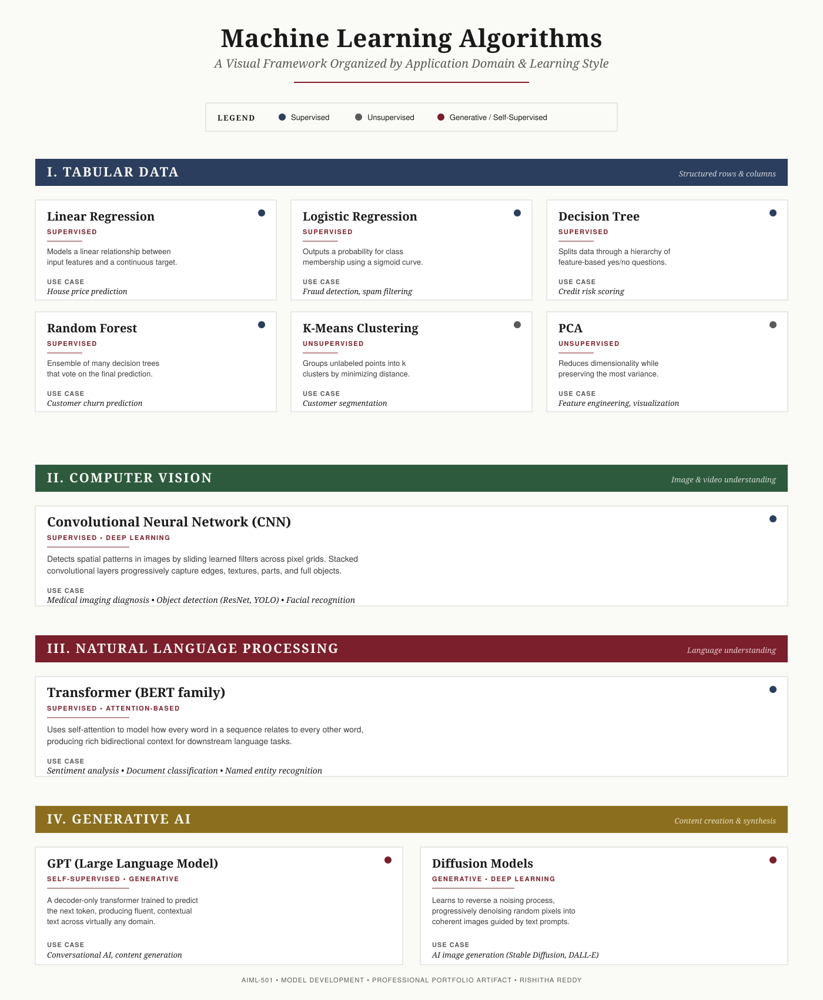

{kind=link}
{kind=link}
Machine Learning Algorithms — A Visual Framework Organized by Application Domain and Learning Style
Back to artifacts
Machine Learning Algorithms
A visual framework categorizing ten foundational ML algorithms by learning style and application domain, with practical use cases.

Title
Introduction
Algorithms are the engines of every machine learning system; selecting the right one is the first and arguably most consequential decision in any model-development workflow (Microsoft, 2025). This artifact distils ten of the most widely used algorithms in modern practice into a single visual reference, grouped by both how they learn (supervised, unsupervised, or generative) and what kind of data they operate on (tabular, image, language, or generative output).
Description
The framework is an SVG infographic covering ten algorithms in four domains:
- Tabular Data — Linear Regression, Logistic Regression, Decision Tree, Random Forest, K-Means Clustering, and Principal Component Analysis (PCA).
- Computer Vision — Convolutional Neural Networks (CNNs).
- Natural Language Processing — Transformer models (BERT family).
- Generative AI — GPT-family Large Language Models and Diffusion Models.
Each algorithm is presented as a card with four pieces of information: the algorithm name, the learning style (badge + colored dot), a one- to two-sentence working description, and a real-world use case. Colored section bars separate the four application domains so the reader can locate algorithms either by data type or by learning paradigm.
Objective
To produce a reusable, professional-quality reference that supports the AIML-501 outcomes of categorizing key machine learning algorithms, illustrating them through a visually compelling framework, and connecting each to a real-world use case. A secondary objective is to maintain a quick-reference asset I can extend through later coursework and consult when matching algorithms to security and research problems.
Process
The artifact was developed in five steps.
- Foundational reading. Reviewed the assigned resources on the AI / ML / DL hierarchy and the major AI domains to ensure my taxonomy was grounded in authoritative sources (Amazon, n.d.; Cloud Simplified, 2024; Codebasics, 2025; Trojahn & Costa, 2024).
- Algorithm shortlist. Selected ten algorithms that together span all four target domains (tabular, computer vision, NLP, generative AI) and all three primary learning styles (supervised, unsupervised, generative / self-supervised), drawing on Microsoft (2025) for the canonical tabular set and on Couto (2025), Sanderson (2023), and Starmer (2021) for the deep-learning and NLP entries.
- Information architecture. Defined a uniform card schema — name, learning style badge, brief explanation, use case — so the framework reads consistently across all ten entries.
- Visual design. Built the layout as an SVG with four colour-coded domain sections, a small legend, and a refined editorial type system. Light, low-contrast surfaces were chosen to keep the infographic legible at any size and on print.
- Export & portfolio integration. Rendered both an SVG (sharp at any zoom level) and a PNG (easy to download and share), embedded the SVG into this portfolio page, and added downloadable copies.
Tools and Technologies Used
- SVG (Scalable Vector Graphics) — primary format for the infographic.
- HTML5 & CSS3 — for the portfolio site that hosts the artifact.
- Cairosvg — Python library used to export the SVG to a high-resolution PNG.
- GitHub Pages — static-site hosting for the portfolio.
- Source readings — Microsoft Azure ML Algorithms reference, IBM and AWS introductions to ML, and the assigned Workshop One videos and articles.
Value Proposition
Unique value. This framework is one of very few visual references that organizes algorithms simultaneously by data type and learning paradigm on a single page, using a consistent card schema and a calm, print-ready editorial style rather than the dense flowcharts typical of textbook diagrams. The two-axis structure makes it easy to answer the practical questions a new practitioner actually asks: "What can I use on tabular data?" and "What works without labels?".
Relevance. Algorithm selection is the first decision in every model-development project, and the cost of choosing wrong is amplified in safety-critical domains such as cybersecurity, healthcare, and finance. As a cybersecurity practitioner moving into AI security research, I depend on this kind of fast taxonomic recall when triaging which class of model is in front of me — whether reviewing a suspicious classifier, evaluating an LLM-powered product, or designing an experiment for my own coursework. The framework is therefore not only a class deliverable but a working tool I expect to reuse throughout the program.
References
Amazon. (n.d.). What is machine learning? AWS. https://aws.amazon.com/what-is/machine-learning/
Cloud Simplified. (2024, April 29). Unraveling the differences between AI, ML, DL, and GenAI [Video]. YouTube. https://www.youtube.com/watch?v=lp_BTL_yADU
Codebasics. (2025, January 2). AI vs machine learning vs deep learning vs generative AI [Video]. YouTube. https://www.youtube.com/watch?v=gHXENP57beg
Couto, J. (2025). An introductory guide to computer vision. Tryolabs. https://tryolabs.com/guides/introductory-guide-computer-vision
Illing, S. (2024, September 20). A beginner's guide to understanding natural language processing (NLP) with GPT. MaestroLabs. https://www.maestrolabs.com/blog-detail/beginners-guide-to-understanding-natural-language-processing-with-gpt
Intuitive Machine Learning. (2020, April 26). K nearest neighbors — intuitive explained [Video]. YouTube. https://www.youtube.com/watch?v=0p0o5cmgLdE
Microsoft. (2025). Machine learning algorithms. Microsoft Azure. https://azure.microsoft.com/en-us/resources/cloud-computing-dictionary/what-are-machine-learning-algorithms
Sanderson, G. (2023). Transformers (how LLMs work) explained visually [Video]. YouTube. https://www.youtube.com/watch?v=wjZofJX0v4M
Starmer, J. (2021, April 25). Decision and classification trees, clearly explained!!! [Video]. YouTube. https://www.youtube.com/watch?v=_L39rN6gz7Y
Trojahn, M., & Costa, B. (2024, August 28). What are the differences between AI, ML, DL, and Gen AI? E-core. https://www.e-core.com/na-en/articles/differences-between-ai-ml-dl-gen-ai/